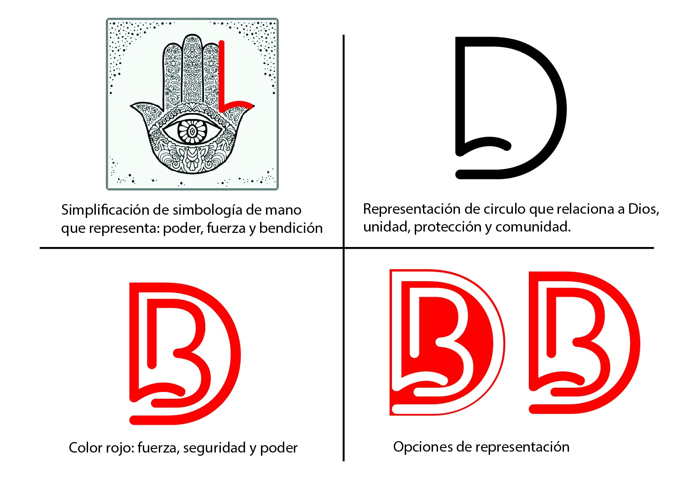
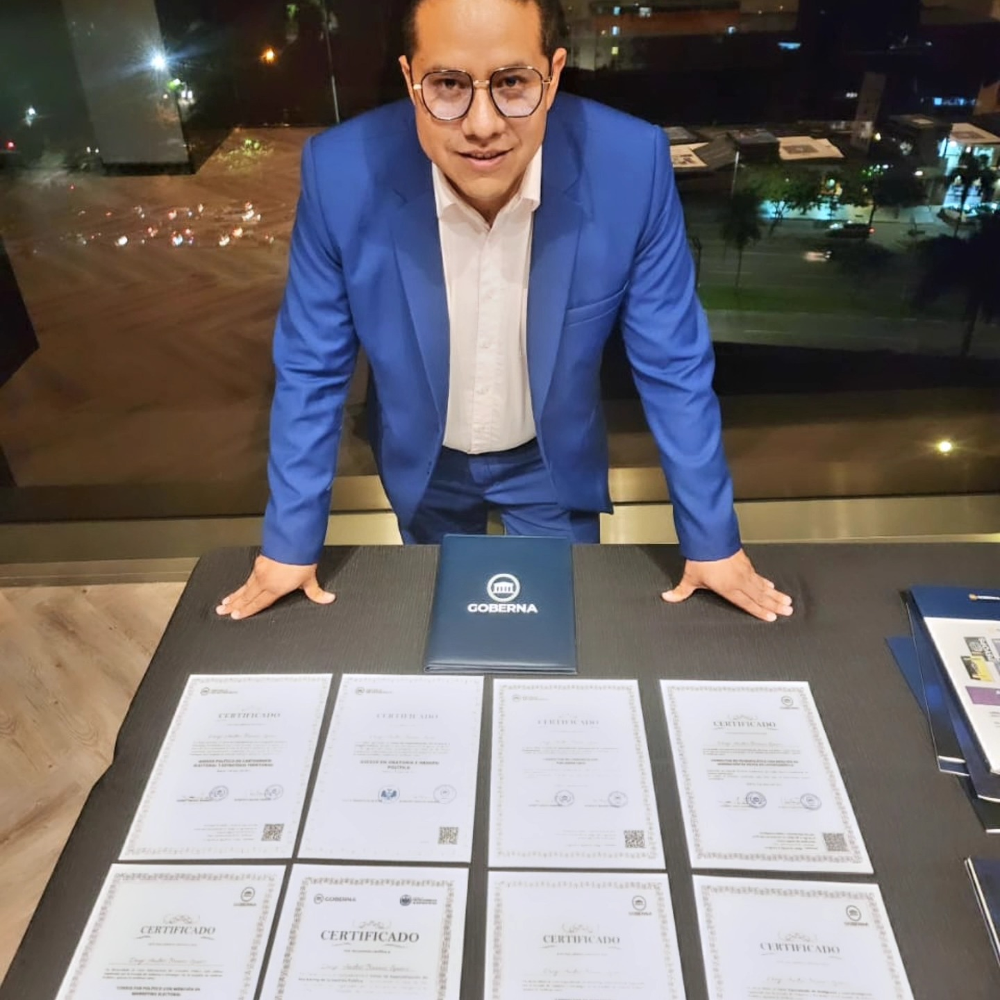
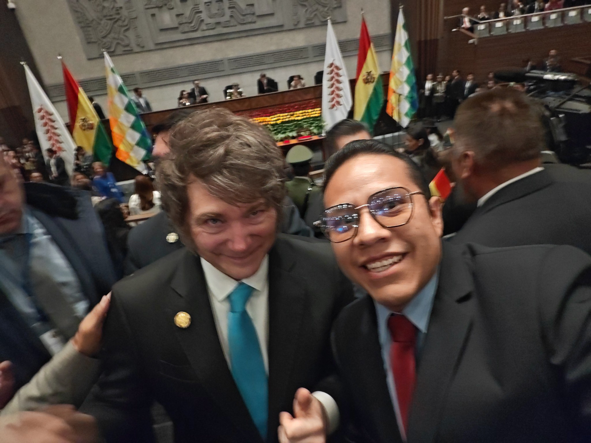
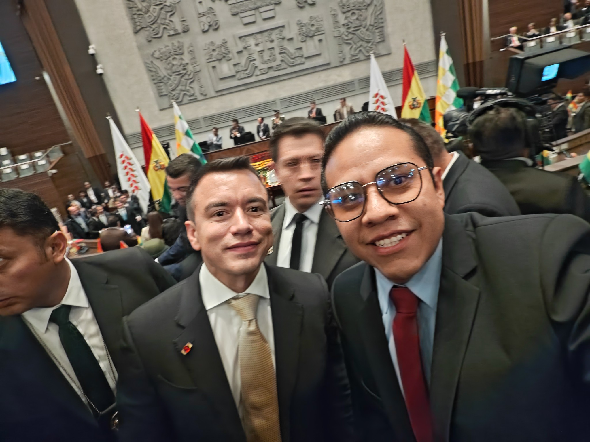
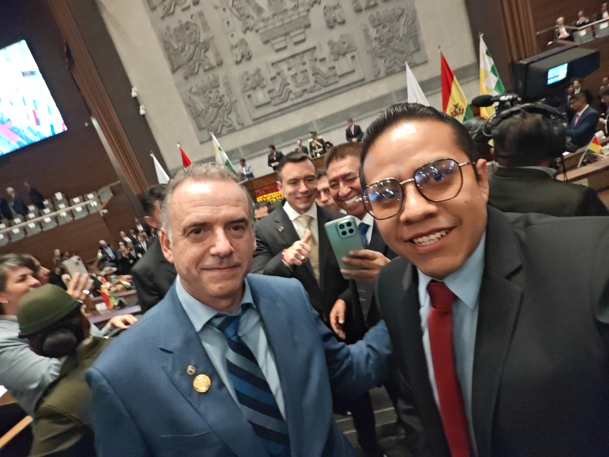

Biografía
Diego Brañez: una vida dedicada al liderazgo y el servicio
Nacido el 27 de septiembre de 1991 en Cochabamba, Diego Brañez ha construido un camino que une compromiso ciudadano, liderazgo juvenil y emprendimiento.
Diputado de Bolivia
27/09/1991 - Cochabamba
- Rol actualDiputado de Bolivia
- FormaciónIngeniero Comercial (USIP, 2016); capacitador JCI Bolivia
- Trayectoria claveVicepresidente Nacional JCI (2020), Presidente JCI Cochabamba (2019), Director BRALE COMPANY
- EmpresasBRALE COMPANY · Airparts Bolivia · Avest Seguridad y Administración

Formación y certificaciones
La educación es el camino al éxito, la formación es el comienzo del cambio.
- Consultor Político con mención en marketing electoral.
- Consultor de marketing gubernamental.
- Consultor en tecnopolítica con mención en generación de votos en Latinoamérica.
- Consultor en comunicación parlamentaria.
- Asesor Político en cartografía electoral y estrategia territorial.
- Asesor en oratoria e imagen política.
- Consultor en inteligencia estratégica y contrainteligencia.
- Especialista en marketing de la gestión pública.
Seguridad
Foro barrial con líderes vecinales y equipos de emergencia.
Educación
Conectividad y becas para colegios de la zona.
Transparencia
Rendición pública trimestral con datos abiertos.
Salud
Clínicas móviles y controles preventivos en barrios.
Historia del logo
Dos versiones que resumen propósito, territorio y cercanía digital.
Evolución visual
De boceto a símbolo ciudadano
El imagotipo está compuesto por las iniciales del nombre a representar que cubre todo en un semicírculo que relaciona a Dios, unidad, protección y comunidad, fusionado con una simplificación de simbología de mano que representa poder, fuerza y bendición.
100 FORMACIÓN
Formación académica
ESTUDIOS PRIMARIOS
- Unidad Educativa 27 de Mayo (1996 - 2001)
- Instituto Americano La Paz (2002)
- Don Bosco CBBA (2003)
ESTUDIOS SECUNDARIOS
- Corporación Educativa "Kanata", Cochabamba (2004 - 2007)
ESTUDIOS UNIVERSITARIOS
- Universidad Simón I. Patiño. Licenciatura en Ingeniería Comercial
Cursos y talleres
CURSOS Y TALLERES
2024
- Diploma Internacional: Política y Liderazgo del Siglo XXI (POLITIK)
- Certificado: Entrenador Internacional de Oratoria y Técnicas de Alto Impacto (Goberna)
- Curso de Especialización: Cartografía Electoral y Estrategia Territorial (Goberna)
- Curso: Comunicación Parlamentaria de Especialización Internacional (Goberna)
- Curso de Especialización: Marketing Gubernamental (Goberna)
- Curso: Inteligencia Contra Inteligencia (Goberna)
- Curso: Voto en Redes (Goberna)
- Diploma Internacional: Operaciones Psicológicas y Psicosociales (Goberna)
- Diploma Internacional: Consultor Político (Goberna)
- Seminario: Entrenamiento Intensivo de Neurocoaching para Políticos (Goberna)
- Seminario: Especializado en Fotografía Política (Goberna)
- Training Internacional: Oratoria y Técnicas de Alto Impacto (Goberna)
- Workshop Internacional: IA para Campañas Electorales (Goberna)
2021
- Curso de Especialización: Graduado como Especialista en Oratoria e Imagen Política
2018
- Academia: Graduado de la Academia Nacional de Liderazgo JCI Bolivia
2017
- Academia: Graduado de la Academia Nacional de Liderazgo JCI Bolivia
2013
- Curso: Formalización de Empresas - Dictado por Lic. Audi Mario Ramos Condarco (12 horas académicas, Cochabamba, 16/10/2013)
- Curso: Carnes a la Parrilla - Dictado por Chef Emilio Garnica (4 horas académicas, Cochabamba, 25/05/2013)
2012
- Curso: JCI Admin - Dictado por CNT. Lauri Zen (4 horas académicas, Cochabamba, 30/04/2012)
- Curso: JCI Achieve - Dictado por CNT. Lauri Zen (4 horas académicas, Cochabamba, 30/04/2012)
- Curso: JCI Presenter - Dictado por CNT. Lauri Zen (8 horas académicas, Cochabamba, 29/03/2012) (Graduado como mejor Presenter de Bolivia)
2011
- Curso: El Poder de la Actitud - Dictado por Giovann Arzabe García (4 horas académicas, Cochabamba, 18/03/2011)
- Curso: Análisis Psicológico de la Obra de Teatro "Las Divorciadas" - Dictado por Mac. Luis Moya Salguero (Cochabamba, 29/11/2010)
2010
- Curso: Operador en Manejo de Paquetes Microsoft Office 2007 (23/08/2010 - 30/09/2010)
2007
- Taller: Desarrollo del Espíritu Emprendedor - Dictado por MBA. Sergio García Agreda (30/11/2007 - 01/12/2007)
- Curso: Trazado y Corte de Planchas Metálicas (3 horas académicas, Cochabamba, 23/08/2007)
2006
- Taller: Relaciones Humanas (06/04/2006 - 27/04/2006, Cochabamba)
- Curso: Conductor Particular (25/03/2006 - 10/04/2006, Cochabamba)
Seminarios y participaciones
SEMINARIOS Y PARTICIPACIONES
2019
- Reunión de Presidentes Locales JCI (La Paz) (Como Presidente JCI Cochabamba)
2018
- Asamblea General JCI Bolivia (Como 1er Vicepresidente JCI Cochabamba)
- Convención Nacional JCI Bolivia (Participante)
2017
- Convención Nacional JCI Bolivia (Participante)
2016
- Convención Nacional JCI Bolivia (Organizador)
- Congreso de Marketing: Kit de Marketing para Emprendedores (Organizador, Octubre 2016, JCI Femenino Cochabamba y UCATEC)
- Congreso de Marketing: Kit de Marketing para Emprendedores (Asistente, 14 horas académicas, Octubre 2016)
2015
- Convención Nacional JCI Bolivia (Representante de Oratoria)
2014
- Convención Nacional JCI Bolivia (Participante)
2013
- Régimen de Importación y Exportación Boliviano (10 horas, 16-19/09/2013, Fundación IDEA Cochabamba)
- Convención Nacional JCI Bolivia
2012
- Corporate Social Responsibility (11-13/06/2012, CADEXCO Cochabamba)
2011
- Perfil del Economista del Nuevo Siglo (3 horas, 04/03/2011, UMSS Cochabamba)
- Éxito Industrial (14/05/2011, UMSS Cochabamba)
- Inducción para Administradores de Empresas (10 horas, Septiembre 2011, UMSS Cochabamba)
- Un ABC para Ingeniería Comercial (10 horas, 17-18/03/2011, UMSS Cochabamba)
- VII Congreso Nacional de Estudiantes de Ciencias Empresariales (80 horas, 04-08/10/2011, UMSS Cochabamba)
- Convención Nacional JCI Bolivia
2010
- Convención Nacional JCI Bolivia (Co-organizador)
- La Importancia de la Investigación en la Ciencia Económica (15/10/2009, UMSS Cochabamba)
Destacados visuales
Espacio para más imágenes, recortes de prensa o banners.
Prensa
Territorio
Proyectos
Videos
Haz click y se abren al centro con audio y controles.
Territorio
Sesiones
Prensa
Trasmisión de mando Presidencial Bolivia 2025

Presidente de Argentina
Javier Milei

Presidente de Ecuador
Daniel Noboa

Presidente de Uruguay
Yamandú Orsi
Trayectoria
Brale Company
Director Comercial | Planificacion, ejecucion e informacion financiera (20/06/2012 - 27/08/2015).
Brale Company
Director Financiero | Planificacion, ejecucion e informacion financiera (desde 01/09/2015).
Airparts Bolivia
Gerente General | Responsable integral de la empresa (desde 19/11/2018).
Avest Seguridad y Administracion
Gerente Ejecutivo | Responsable de empresas.
Asamblea Departamental de Cochabamba
Asambleista Departamental | Jefe de Bancada Sumate (desde 03/05/2021).
Diputado de Bolivia
Gestion actual como Diputado de Bolivia; comisiones de seguridad ciudadana y transparencia.
Equipo y apoyo
 LinkedIn
LinkedIn
 Facebook
Facebook
Redes
 X
X
 TikTok
TikTok
QR de redes